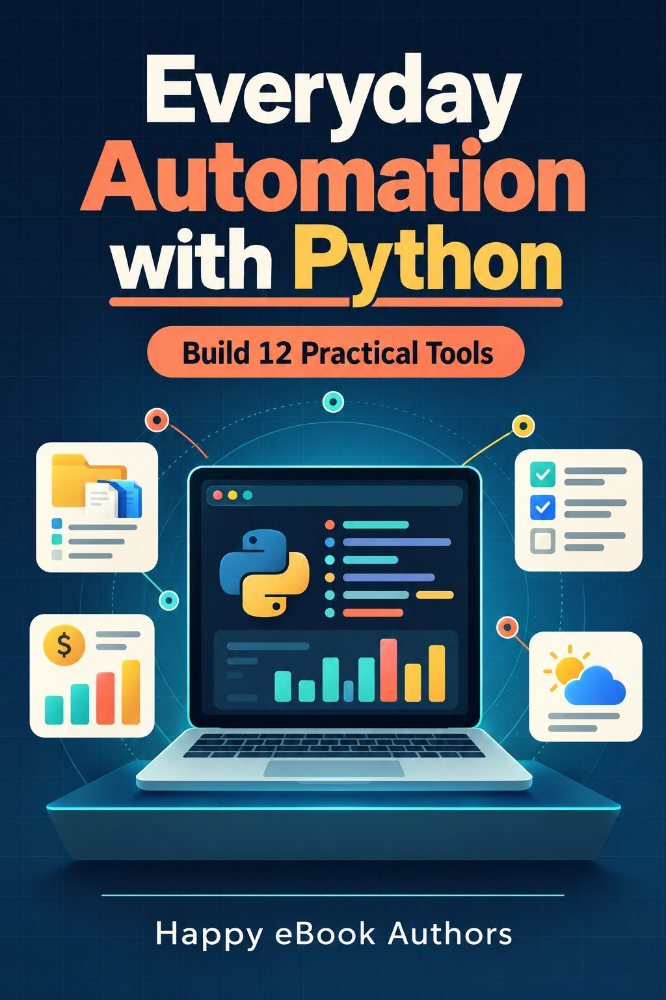

Everyday Automation with Python
Build 12 Practical Tools

Everyday Automation with Python
Build 12 Practical Tools
Learn Python by building tools for everyday tasks. This beginner-friendly guide takes you from basic syntax to twelve practical automation projects: tracking expenses, managing to-do lists and shopping budgets, organizing files and photos, finding duplicate files, recording habits and reminders, checking the weather, comparing prices, searching notes, and exploring an AI-assisted note workflow. Each project explains what it does and how to run it, with examples, expected results, and a hands-on exercise. Along the way, you'll practice working with CSV and JSON, validating input, handling errors, and protecting your files and personal information. Most examples use Python 3 and its standard library. A few optional projects connect to online services or use a third-party package; their requirements are explained before you begin. Start with sample data, keep backups when working with files, and check each result before relying on it. For readers with little or no programming experience, this book offers a step-by-step path from your first programs to practical tools you can understand and customize.
作品介紹；目前未提供購買或試閱入口